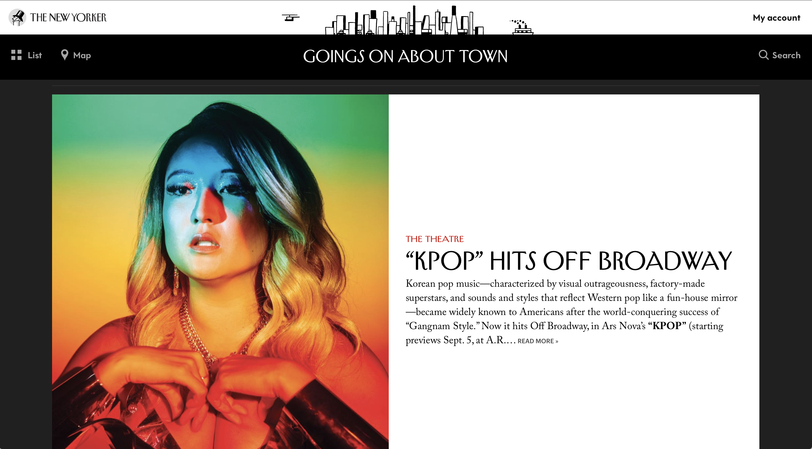
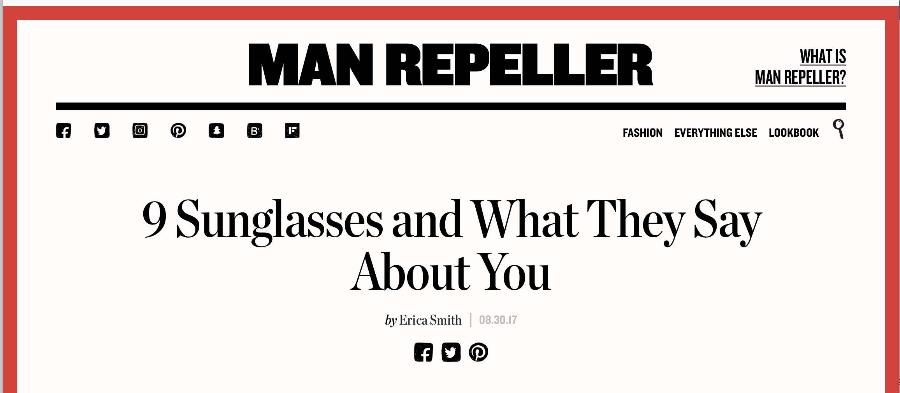

The New Yorker x Man Repeller
Editorial Websites:
I mostly spend time on editorial sites since I am a Journalism and Design major. This being the case the two websites I choose to analyze where The New Yorker (TNY) and Man Repeller (MR). One of the biggest differences and, what might make this comparison seemingly unfair is the size of the design team working on these websites. The New Yorker has many people constantly working and reworking while Man Repeller only has hired outside contractors. Using Nielsen’s scale for usability, I went through both websites thoroughly. One of the main things I notice are the navigation bars. On the New Yorker, each section is clearly defined in the navigation while on Man Repeller there are only two categories. If one were to look for something a little more specifically it would be difficult. This can also be seen if the user were to scroll down the page. While the New Yorker applies categorical tags above their articles for a clearer and more efficient description of their stories.
Man Repeller:
The New Yorker:

Once the user feels more at ease with the design looking through stories on both websites is much smoother. Both contain a wide range of information that is accessible immediately. MR emphasizes their social channels and has heavy advertising throughout the site. Using the design, therefore, becomes much simpler. Both websites are very memorable. The New Yorker has had a custom font for ages and is strongly branded towards the content they provide. The newly updated, Going’s On About Town Section is a great example of what Nielsen defines as Memorability since it can bring their physical edition into a wonderful digital space. It’s clean and simple to use.
While Man Repellers memorable structure would be somewhat difficult to familiarise yourself with once again. The use of color is also very overwhelming when it comes to story pages. The color changes from story to story but doesn’t seem to have any categorical meaning which makes the use of color slightly unnecessary. Man Repeller does have many qualities for a website, but as an editorial site, it’s a bit troubling in providing an accurate description of what one is going to be clicking on.
This becomes even more overwhelming once on the mobile experience since headlines and images are stacked and surrounded by thick bands of color. The feature I found to be the most bizarre on this particular website is the use of “Lookbook” this feature appears to be something they are hoping to drive their traffic too, but it seems not to have a very specific purpose other than to be a slideshow. I believe the design can be refined and updated as they have just recently re-designed the site. But on a journalistic level, I believe that for the MR site to improve it would be important to add purpose to some of the features they have decided to enable (i.e., color bars around pages). This would allow for a cleaner and more navigable website in many ways..